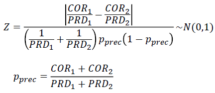
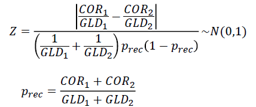

MevAL（メバル）は，形態素解析器の性能評価およびエラー分析を行うためのツールです．
実装はJAVAで行なっています．
入力は形態素解析器MeCabの標準的な出力形式（MeCab形式）に準拠しています．
また，入出力ファイルの文字コードは，UTF-8 ONLYで，
入力ファイルの改行コードは「¥n」，「¥r」，「¥r¥n」すべてに対応していますが，
出力ファイルの改行コードは「\n」で固定です．
画面表示は，システム標準の文字コード，改行文字で行います．
形態素解析器MeCabの標準的な出力形式．
「.mecab」という拡張子はコーパス管理ツール「Chaki」に由来する．
各行は，文末を表す記号「EOS」，
もしくは単語分割後の１語を表す「表層形（フィールド０）
¥tフィールド１,フィールド２,...」の形となっています．
「フィールド１,フィールド２,...」の部分はCSV形式に準拠しています．
今日 名詞,副詞可能,*,*,*,*,今日,キョウ,キョー は 助詞,係助詞,*,*,*,*,は,ハ,ワ いい 形容詞,自立,*,*,形容詞・イイ,基本形,いい,イイ,イイ 天気 名詞,一般,*,*,*,*,天気,テンキ,テンキ です 助動詞,*,*,*,特殊・デス,基本形,です,デス,デス EOS すもも 名詞,一般,*,*,*,*,すもも,スモモ,スモモ も 助詞,係助詞,*,*,*,*,も,モ,モ もも 名詞,一般,*,*,*,*,もも,モモ,モモ も 助詞,係助詞,*,*,*,*,も,モ,モ もも 名詞,一般,*,*,*,*,もも,モモ,モモ EOS |
・ リポジトリページへのリンクを設定
・ 本ページの文言微修正
・ MITライセンスを付与
・ githubへ移動
・ ソースコード公開開始
Jarファイルを公開しています．下記のファイルをダウンロードし，クラスパスを通して使用してください．
またMevALを使用するためには，以下のライブラリが必要です．
それぞれ下記のページからあらかじめダウンロードし，クラスパスを通しておいてください．
コマンドライン引数を処理
http://commons.apache.org/proper/commons-cli/
（commons-cli-1.2.jarで動作を確認）
半角文字の認識のために使用
（ icu4j-50_1_1.jarで動作を確認）
実行時，以下のようにオプションでjarファイルを直接指定してください．
% java -cp /home/teru-oka-1933/java_lib/meval_beta.jar:/home/teru-oka-1933/java_lib/commons-cli-1.2.jar:/home/teru-oka-1933/java_lib/icu4j-50_1_1.jar meval.Scorer -h |
上記のファイルの置き場所は一例です．丸コピせずに各自ダウンロードしたjarファイルを置いた場所に書き換えて実行してください．
MevALには以下の機能が揃っています．
形態素解析器の自動形態素解析結果を，正解データと比べて評価するためのツール
単語認定の性能（Precision, Recall, F値）を段階的に評価します
(MeCabに同梱のmecab-system-evalの改良版)
２つの自動形態素解析手法の単語認定性能を比較し， 性能に有意差があるか調べるためのツール
２群の母比率の差の検定 : Precision, Recallの検定
ブートストラップ検定 : F値, Precision, Recallの検定
形態素解析器の自動形態素解析結果を正解データと比べて，単語認定の性能を評価します．
(MeCabに同梱のmecab-system-evalの改良版)
評価値は，Preision（適合率）, Recall（再現率），F値です．
計算式は以下の通り．
Precision = COR / PRD
Recall = COR / GLD
COR: 単語認定に成功した単語数
PRD: 自動形態素解析結果中の総単語数
GLD: 正解アノテーションデータ中の総単語数
F値 = (2 * Precision * Recall) / (Precision + Recall)
単語認定の性能評価（= CORの計算）は通常，以下のように段階的に実施します．
例: Kudo et al., 2004使用辞書: IPA-Dic
（MevAL内部では，フィールド0以外のフィールド値"*"は空文字""と同一視されます）
|
また，完全一致（= 当該文内の全単語が正解アノテーションと一致）した文の割合も計算します（Correctly Analysed Sentences）．
（-gで指定したファイルと，-pで指定したファイルは，いずれも同一のテキストに対して， 自動or手動で形態素解析を行なった結果でなくてはいけない． また，ファイル中の文の順序は，両方のファイルで一致している必要がある）
-f, --field "フィールド番号"
評価に使用するフィールドを指定します． フォーマットは，
-f "レベル1の評価で使うフィールド番号,レベル2の評価で使うフィールド番号,レベル3の評価で使うフィールド番号, ..." |
であり，例えば以下のように書きます．
-f "1,2,4,6" |
各レベルの評価に使うフィールドは，複数個指定可能です． 複数個指定する場合は，以下のように，"+"でフィールド番号をつなげて書きます．
-f "1+2+3+4,5+6,7+8" |
-fオプションを使用しない場合，レベル0として表層形（フィールド0）の認定性能のみ評価します．
-fオプションを使用した場合でも，必ず最初にレベル0として表層形（フィールド0）の認定性能を評価します．
そのため，-fオプションでは，レベル0以降の評価に使うフィールド番号を指定します．
また，レベルiで評価に使ったフィールドは，レベルj(>i)の評価にも自動で使われるので，重複して指定する必要はありません．
以下の２つは，いずれも同じ結果となります．
-f "1,2,3,4" |
-f "1,1+2,1+2+3,1+2+3+4" |
例えば，Kudo et al., 2004の評価を再現する場合，-fオプションは以下のように指定します．
-f "1,2+3+4+5+6+7" |
注： レベル０以外でフィールド０を評価に使った場合は，表層形自体の一致を評価しますが， レベル０では，単語の開始位置と終了位置のみで評価を行なっているため， 自動解析結果中で表層形文字列が書き変わっていたとしても， 表層形文字列長さえ保持されていれば，問題ありません．
-h, --help
ヘルプの表示
% java meval.Scorer -h
========================================
MEVAL SCORER
========================================
usage: meval.Scorer [options]
-f,--field <arg> Field numbers using at each level evaluation (e.g.,
"1,2+3+4,7+9")
-g,--gold <arg> *Gold-annotation file (.mecab)
-h,--help Help
-p,--pred <arg> *System-predict file (.mecab)
|
% java meval.Scorer -g gold.mecab -p pred.mecab -f "1+2+3+4,5+6,7+8"
========================================
MEVAL SCORER
========================================
Gold: gold.mecab
Pred: test.mecab
----------------------------------------
Field Num
LEVEL 0 : 0
LEVEL 1 : +1+2+3+4
LEVEL 2 : +5+6
LEVEL 3 : +7+8
----------------------------------------
Sentence Num: 5943
Gold Word Num (GLD): 127893
Pred Word Num (PRD): 128169
Character Num: 202898
========================================
LEVEL 0 : 0
========================================
Correctly Analysed Sentences:
94.97% (5644/5943 = 0.94968873)
----------------------------------------
COR : 127325
----------------------------------------
Prec. : 99.34% (127325/128169 = 0.99341494)
Rec. : 99.56% (127325/127893 = 0.9955588)
F : 99.45 (0.99448574)
========================================
LEVEL 1 : +1+2+3+4
========================================
Correctly Analysed Sentences:
83.17% (4943/5943 = 0.83173484)
----------------------------------------
COR : 126384
----------------------------------------
Prec. : 98.61% (126384/128169 = 0.9860731)
Rec. : 98.82% (126384/127893 = 0.9882011)
F : 98.71 (0.98713595)
========================================
LEVEL 2 : +5+6
========================================
Correctly Analysed Sentences:
81.57% (4848/5943 = 0.81574965)
----------------------------------------
COR : 126241
----------------------------------------
Prec. : 98.5% (126241/128169 = 0.98495734)
Rec. : 98.71% (126241/127893 = 0.98708296)
F : 98.6 (0.986019)
========================================
LEVEL 3 : +7+8
========================================
Correctly Analysed Sentences:
76.8% (4564/5943 = 0.76796234)
----------------------------------------
COR : 125817
----------------------------------------
Prec. : 98.16% (125817/128169 = 0.9816492)
Rec. : 98.38% (125817/127893 = 0.9837677)
F : 98.27 (0.9827073)
|
2つの自動形態素解析手法の単語認定性能を比較し，性能に有意差があるか調べるためのツール．
PropTestでは，指定した2手法（Method1, Method2）の，あるレベルにおけるPrecision間， もしくはRecall間に有意差があるか調べるため，以下の検定統計量Zを電卓的に計算します．


COR1 : Method1の検定対象レベルにおけるCOR
PRD1 : Method1のPRD
GLD1 : Method1のGLD
COR2 : Method2の検定対象レベルにおけるCOR
PRD2 : Method2のPRD
GLD2 : Method2のGLD
PRD, GLDおよび，各レベルにおけるCORは，Scorerを使って調べることができます．
COR, PRD, GLDの詳細については，スコアラーの項目を参照してください．
検定結果と，p値，およびZの関係は以下の通り．
「両側検定・有意水準5%で有意差有り」 = 「p値 <= 0.025」 = 「統計検定量Z >= 1.960」
「両側検定・有意水準1%で有意差有り」 = 「p値 <= 0.005 」 = 「統計検定量Z >= 2.576」
「片側検定・有意水準5%で有意差有り」 = 「p値 <= 0.05」 = 「統計検定量Z >= 1.645」
「片側検定・有意水準1%で有意差有り」 = 「p値 <= 0.01」 = 「統計検定量Z >= 2.326」
% java meval.PropTest |
上のコマンドを入力すると，以下のようなインタプリタが起動し，入力待ち状態となります （「>」は，インタプリタが入力待ちになっていることを意味しています）．
======================================== MEVAL PROP TEST ======================================== Test Precision and Recall ---------------------------------------- Method 1: COR> |
まずは，Method1のCOR, PRD, GLDを1つずつ入力し，Enterしていきます．
Method 1: COR> 19731 [Enter] GLD> 23852 [Enter] PRD> 23121 [Enter] |
次に，同様にしてMethod2のCOR, PRD, GLDを1つずつ入力し，Enterしていきます．
Method 2: COR> 20024 [Enter] GLD> 23852 [Enter] PRD> 23532 [Enter] |
各Methodの性能評価値（Precision, Recall）が表示され，
その下に計算した検定統計量（Z）が表示されます．
Zの下には，検定の結果が表示されます．
両側検定・片側検定，それぞれについて，
有意水準5%（0.005）と1%（0.001）の検定結果が表示されます．
有意差がある場合は「SIGNIFICANT」，
有意差がない場合は「NOT SIGNIFICANT」と表示されます．
下の例では，Precisionに関しては有意差が見られませんが，
Recallには有意水準1%の両側検定で有意差が見られます．
========================================
Precision
========================================
Method 1: 0.85338 (19731/23121)
Method 2: 0.8509264 (20024/23532)
----------------------------------------
Z: 0.74648863
----------------------------------------
Both-Side Test
Significance Level:
0.05 (5%): NOT SIGNIFICANT (Z < 1.960)
0.01 (1%): NOT SIGNIFICANT (Z < 2.576)
One-Side Test
Significance Level:
0.05 (5%): NOT SIGNIFICANT (Z < 1.645)
0.01 (1%): NOT SIGNIFICANT (Z < 2.326)
========================================
Recall
========================================
Method 1: 0.8272262 (19731/23852)
Method 2: 0.8395103 (20024/23852)
----------------------------------------
Z: 3.5999243
----------------------------------------
Both-Side Test
Significance Level:
0.05 (5%): SIGNIFICANT (Z >= 1.960)
0.01 (1%): SIGNIFICANT (Z >= 2.576)
One-Side Test
Significance Level:
0.05 (5%): SIGNIFICANT (Z >= 1.645)
0.01 (1%): SIGNIFICANT (Z >= 2.326)
|
なし．
-p, --prec
Precisionのみの検定を行う．（デフォルト : PrecisionとRecall）
-r, --rec
Recallのみの検定を行う．（デフォルト : PrecisionとRecall）
（-pと-rの両方を指定した場合は，デフォルトと同じく，PrecisionとRecall両方の検定を行います）
-h, --help
ヘルプの表示
% java meval.PropTest -h ======================================== MEVAL PROP TEST ======================================== usage: meval.PropTest [options] -h,--help Help -p,--prec Test only precision (Default: Precsion & Recall) -r,--rec Test only recall (Default: Precsion & Recall) |
F値の検定は，母集団がわからないをため，通常の検定手法を適用することができません． そこで，ブートストラップ法を使用し，２手法のF値の差の1-α信頼区間に， 0が含まれるか否かでF値の検定を実施します． 実装には下記の文献より，特に10.1.2節「２つの母集団の母数の比較」から， 一般の場合の信頼区間の求め方を参考しました．
吉原健一，金川秀也： やさしい統計-いかにして統計データを利用するか， 第10章ブートストラップ， pp.139-164， 培風館（2007）．
-g1, --gold1 ファイル名
Method 1に対する形態素解析の正解アノテーション（MeCab形式）
-p1, --pred1 ファイル名
Method 1の自動形態素解析結果（MeCab形式）
-p2, --pred2 ファイル名
Method 2の自動形態素解析結果（MeCab形式）
（-g1で指定したファイルと，-p1で指定したファイルは，いずれも同一のテキストに対して， 自動or手動で形態素解析を行なった結果でなくてはいけない． また，ファイル中の文の順序は，両方のファイルで一致している必要がある（-g2と-p2でも同様）．）
-g2, --gold2 ファイル名
Method 2に対する形態素解析の正解アノテーション（MeCab形式）．
g1で指定したファイルと同一の場合は省略可．
-prec
Precisionの検定結果を表示（デフォルト: F値のみ）．
-rec
Recallの検定結果を表示（デフォルト: F値のみ）．
-alpha
有意水準の設定（デフォルト: 0.01）．
-f, --field"フィールド番号"
検定したいレベルで用いているフィールド番号を指定します． フォーマットは，
-f "フィールド番号" |
であり，例えば，以下のように書きます．
-f "1" |
フィールド番号は一度に複数個指定可能であり，以下のように「+」でつないで記述します．
-f "1+2+3+4" |
デフォルトでは，スコアラーと同じくフィールド0のみで検定を行ないます．
-fオプションを指定した場合でも，必ずフィールド0の評価は実施するため，
通常-fオプションでは，フィールド0以降の番号を指定します．
-h, --help
ヘルプの表示
% java meval.BootstrapTest -h ======================================== MEVAL BOOTSTRAP TEST ======================================== usage: meval.BootstrapTest [options] -alpha <arg> Significance level (Default: 0.001 (1%)) -B <arg> Resampling size (Default: 1000) -f,--field <arg> Field-numbers using for test (e.g., "1+2+3") -g1,--gold1 <arg> *Method 1's gold-annotation file (.mecab) -g2,--gold2 <arg> Method 2's gold-annotation file (.mecab) -h,--help Help -p1,--pred1 <arg> *Method 1's system-predict file (.mecab) -p2,--pred2 <arg> *Method 2's system-predict file (.mecab) -prec Display Precision's result -rec Display Recall's result |
% java meval.BootstrapTest -g1 gold.mecab -p1 pred.mecab -p2 pred2.mecab -B 1000 -alpha 0.005 -f "1+2+3+4+5+6+7+8" -prec -rec
========================================
MEVAL BOOTSTRAP TEST
========================================
Method1:
Gold: gold.mecab
Pred: pred.mecab
Method2:
Gold: gold.mecab
Pred: pred2.mecab
Target Fields : 0+1+2+3+4+5+6+7+8
Resampling Size : 1000
Significance Level : 0.005
========================================
Method 1's Corpus:
Sentence Num: 5943
Gold Word Num (GLD): 127893
Pred Word Num (PRD): 128169
Character Num: 202898
----------------------------------------
Now Resampling ...
..........Done!
----------------------------------------
Method 2's Corpus:
Sentence Num: 5943
Gold Word Num (GLD): 127893
Pred Word Num (PRD): 128158
Character Num: 202898
----------------------------------------
Now Resampling ...
..........Done!
========================================
Precision
========================================
Method1: 99.34% (0.99341494)
Method2: 99.55% (0.99549776)
----------------------------------------
Confidence Interval:
[-0.004637003, 0.0010128617]
Result:
NOT SIGNIFICANT (0 is in this interval !)
========================================
Recall
========================================
Method1: 99.56% (0.9955588)
Method2: 99.76% (0.99756044)
----------------------------------------
Confidence Interval:
[-0.003870368, -7.70092E-4]
Result:
SIGNIFICANT (0 is NOT in this interval)
========================================
F
========================================
Method1: 99.34 (0.99448574)
Method2: 99.55 (0.996528)
----------------------------------------
Confidence Interval:
[-0.0038545132, -2.3144484E-4]
Result:
SIGNIFICANT (0 is NOT in this interval)
|
形態素解析を単語分割+品詞タグ付けと見なしたときの，「単語分割」のエラー分析を行うため， MevALには「単語境界判定（Word Boundary Detection）」の評価及びエラー事例の抽出を行う機能があります．
単語境界判定では，単語分割を「文中の各文字間を単語境界と見なすか否か」の２値分類問題をとして考えます．
表層形認定では，単語の語頭と語末位置で正しく分割が行われており，かつその語内に誤った分割を含まない場合に限り，
認定正解となりました．
これに対し，ここでは，ある単語同士の境界が，正しく境界と判定できてさえいれば，それだけで正解（TP）となります．
そのため単語境界判定の評価は，表層形認定と同様，Precision，Recall，F値を使いますが，
PrecisionとRecallの計算式が異なっています．
Precision = TP / (TP + FP)
Recall = TP / (TP + FN)
F = (2 * Precision * Recall) / (Precision + Recall)
ここでは，TP, FP, FNはそれぞれ以下のように定義されます．
TP(TruePositive) : 自動形態素解析結果中の単語境界の内，正解アノテーションにも含まれる境界の数
FP(FalsePositive) : 自動形態素解析結果中の単語境界の内，正解アノテーションには含まれない境界の数
FN(FalseNegative) : 正解アノテーション中の単語境界の内，自動形態素解析結果には含まれない境界の数
| GLD | す | も | も | ｜ | も | ｜ | も | も | ｜ | も | |
| PRD | す | も | も | ｜ | も | も | ｜ | も | ｜ | も | |
| TP | FN | FP | TP |
（-gで指定したファイルと，-pで指定したファイルは，いずれも同一のテキストに対して， 自動or手動で形態素解析を行なった結果でなくてはいけない． また，ファイル中の文の順序は，両方のファイルで一致している必要がある）
-o, --output ファイル名
単語境界判定に失敗した詳細な事例を出力するためのファイルを指定する．
-oオプションを使用しない場合，以下のように単語境界判定の性能評価のみが行われます．
% java meval.WbdErrAnalysis -g gold.mecab -p pred.mecab
========================================
MEVAL WBD-ERR ANALYSIS
========================================
Gold: gold.mecab
Pred: pred.mecab
Output: null
----------------------------------------
Sentence Num: 5943
Gold Word Num (GLD): 127893
Pred Word Num (PRD): 128169
Character Num: 202898
----------------------------------------
Sentence Boundary Detection Score:
----------------------------------------
Prec. : 97.77% (129751/132714 = 0.97767377)
Rec. : 99.73% (129751/130108 = 0.9972561)
F : 98.74 (0.98736787)
----------------------------------------
TP: 129751 FP: 2963 FN: 357
----------------------------------------
...Done!
|
実行結果には「Sentence Boundary Detection Score」と表示されていますが，
これは「Word Boundary Detection Score」の間違いです．
いずれ修正します．
-oオプションを使用した場合，単語境界判定の性能評価に加えて， 以下のような単語境界判定に失敗した事例を抽出し，出力します．
FPFN Sentence Num: 23 FPFN GOLD: 友達|と|こ の|間 FPFN PRED: 友達|と こ|の|間 FPFN FN FP FPFN //FN Sentence Num: 43 //FN GOLD: て|何|時|に //FN PRED: て|何 時|に //FN FN //FN FP// Sentence Num: 4410 FP// GOLD: で|ペ ー ス メ ー カ ー|を FP// PRED: で|ペ ー ス|メ ー カ ー|を FP// FP FP// |
出力したファイルの中では，事例ごとにヘッダータグが振られ， grepコマンドで特定のエラーを含む事例だけに絞り込めるようになっています．
ヘッダー
FP// : FPを含み，FNは含まない事例
//FN : FNを含み，FPは含まない事例
FPFN : FPとFNの両方を含む事例
絞り込みの例1：FN"のみ"を含む事例に絞り込みたい場合
grep "ˆ//FN" wbd_err.txt |
絞り込みの例2：FNを含む事例（FPFN+//FN）に絞り込みたい場合
grep "ˆ..FN" wbd_err.txt |
-h, --help
ヘルプの表示
% java meval.WbdErrAnalysis -h ======================================== MEVAL WBD-ERR ANALYSIS ======================================== usage: meval.WbdErrAnalysis [options] -g,--gold <arg> *Gold-annotation file (.mecab) -h,--help Help -o,--output <arg> Output file -p,--pred <arg> *System-predict file (.mecab) |
形態素解析を単語分割+品詞タグ付けとみなしたときの，
「品詞タグ付け」のエラーの傾向を調べるための機能です．
ここでは以下の3つのモードで，それぞれ頻度を集計します．
正解アノテーション中のタグを，自動解析ではどのタグと誤りやすいか
正解アノテーション中のどのタグが誤って識別されやすいか
自動解析結果中のどのタグが誤っていやすいか
（-gで指定したファイルと，-pで指定したファイルは，いずれも同一のテキストに対して， 自動or手動で形態素解析を行なった結果でなくてはいけない． また，ファイル中の文の順序は，両方のファイルで一致している必要がある）
-f, --field "フィールド番号"
誤り傾向を調査したいフィールド番号を指定します．
フォーマットは，
-f "フィールド番号" |
であり，例えば，以下のように書きます．
-f "1" |
フィールド番号は一度に複数個指定可能であり，以下のように「+」でつないで記述します．
-f "1+2+3+4" |
上の例の場合，「フィールド1+フィールド2+フィールド3+フィールド4」を1つのタグと見なしたうえで，誤り頻度をカウントします．
-m, --mode モード番号(0～2)
どういった誤りの頻度を集計したいか選択します（デフォルト: 0）．
モード 0:
正解データ中のタグを自動解析ではどのタグと間違えやすいのかカウントします．
GOLD | -> | PRED | ERR_NUM ---------------------------------------- 助動詞 -> 助詞 202 接尾辞 -> 名詞 75 名詞 -> 接尾辞 54 助詞 -> 助動詞 50 動詞 -> 名詞 31 英単語 -> 名詞 29 名詞 -> 動詞 25 名詞 -> 補助記号 15 記号 -> 名詞 13 副詞 -> 名詞 10 |
GOLD: 正解タグ
PRED: 自動付与したタグ
ERR_NUM: 自動単語分割に正解した語の内での誤り頻度
モード 1:
正解ファイル中のどのタグが誤って識別されやすいかカウントします．
また，2列目の値と3列目の値を使って，各タグのRecallを計算することが可能です．
GOLD | ERR_NUM | COR_SEG | ALL ---------------------------------------- 助動詞 207 9134 9158 名詞 117 42545 42871 接尾辞 86 4244 4296 助詞 52 31515 31541 動詞 43 13457 13486 英単語 30 30 34 副詞 24 1487 1493 記号 14 206 216 接続詞 12 409 410 補助記号 9 16447 16482 |
GOLD: 正解タグ
ERR_NUM: 自動単語分割に正解した語の内での誤り頻度
COR_SEG: 正解データ中の当該タグの付いた単語が， 自動単語分割（表層形（LEVEL 0））に正解した個数
ALL: 正解データ中における当該タグの出現数
モード 2:
自動解析結果中のどのタグが誤っていやすいかカウントします．
また，2列目の値と3列目の値を使って，各タグのPrecisionを計算することが可能です．
PRED | ERR_NUM | COR_SEG | ALL ---------------------------------------- 助詞 211 31674 31717 名詞 183 42611 42970 接尾辞 64 4222 4279 助動詞 53 8980 9003 動詞 36 13450 13473 副詞 19 1482 1492 補助記号 17 16455 16646 接頭辞 13 877 884 形状詞 10 1253 1257 接続詞 8 405 405 |
PRED: 自動付与したタグ
ERR_NUM: 自動単語分割に正解した語の内での誤り頻度
COR_SEG: 自動形態素解析結果中の当該タグの付いた単語が， 自動単語分割（表層形（LEVEL 0））に正解している個数
ALL: 自動形態素解析結果中における当該タグの出現数
-t, --top N
-oで指定したファイルへエラーを書きだす際，エラー頻度の上位N件のみ出力します（N>0）
-o, --output ファイル名
各モードで集計したエラー頻度を出力するためのファイルを指定する．
-oオプションを指定しない場合，以下のように，タグ付けの性能が評価されるだけです．
% java meval.TagErrAnalysis -g gold.mecab -p pred.mecab -m 0 -f "1"
========================================
MEVAL TAG-ERR ANALYSIS
========================================
Gold: gold.mecab
Pred: pred.mecab
Output: null
Target Fields: 1
----------------------------------------
Sentence Num: 5943
Gold Word Num (GLD): 127893
Pred Word Num (PRD): 128169
Character Num: 202898
----------------------------------------
Correctly Tagged Words: 126690
Correctly Segmented Words: 127325
Acc. : 99.5% (126690/127325 = 0.99501276)
----------------------------------------
...Done!
|
-h, --help
ヘルプの表示
% java meval.TagErrAnalysis -h
========================================
MEVAL TAG-ERR ANALYSIS
========================================
usage: meval.TagErrAnalysis [options]
-f,--field <arg> *Field numbers using for target level (e.g., "1+2")
-g,--gold <arg> *Gold-annotation file (.mecab)
-h,--help Help
-m,--mode <arg> Output mode (Default: 0)
0: Output frequency of confusion patterns
1: Output frequency of un-distinguished tags in gold
2: Output frequency of incorrect tags in pred
-o,--output <arg> Output file
-p,--pred <arg> *System-predict file (.mecab)
-t,--top <arg> Output top <arg> error instances (Default: MIN(100,
ALL))
|
MeCab形式のファイル中の文数， 単語数，表層形文字数（Code Point数）をカウントし，表示する．
% java meval.Count -i bccwj_core.mecab
========================================
MEVAL COUNT
========================================
Input: bccwj_core.mecab
----------------------------------------
Sentence Num: 59432
Word Num: 1290060
Character Num: 2042594
----------------------------------------
...Done!
|
-i, --input ファイル名
入力ファイル(MeCab形式)
-h, --help
ヘルプの表示
% java meval.Count -h ======================================== MEVAL COUNT ======================================== usage: meval.Count [options] -h,--help Help -i,--input <arg> *Input corpus (.mecab) |
Mecab形式は1文が複数行で記述されるため，単に「sort -R」コマンドで
シャッフルすることができません．
そこでMevALには，
MeCab形式のファイル中の文をシャッフルする機能が搭載されています．
% java meval.Shuffle -i bccwj_core.mecab -o bccwj_core_shuffle.mecab
========================================
MEVAL SHUFFLE
========================================
Input: bccwj_core.mecab
Output: bccwj_core_shuffle.mecab
----------------------------------------
Sentence Num: 59432
Word Num: 1290060
Character Num: 2042594
----------------------------------------
...Done!
|
-h, --help
ヘルプの表示
% java meval.Shuffle -h ======================================== MEVAL SHUFFLE ======================================== usage: meval.Shuffle [options] -h,--help Help -i,--input <arg> *Input file (.mecab) -o,--output <arg> *Output file (.mecab) |
MeCab形式のファイル中の文を任意の比率で訓練（train）， 評価（test）（，開発（dev））に分割します．
% java meval.Divide -i bccwj_core.mecab -tr train.mecab -te test.mecab -r "9:1" ======================================== MEVAL DIVIDE ======================================== Input: bccwj_core.mecab Train: train.mecab Test : test.mecab Dividing Ratio: 9:1 ---------------------------------------- ...Done! % java meval.Divide -i bccwj_core.mecab -tr train.mecab -te test.mecab -d dev.mecab -r "8:1:1" ======================================== MEVAL DIVIDE ======================================== Input: bccwj_core.mecab Train: train.mecab Test : test.mecab Dev : dev.mecab Dividing Ratio: 8:1:1 ---------------------------------------- ...Done! |
-i, --input ファイル名
入力ファイル(MeCab形式)
-tr, --train ファイル名
出力ファイル(訓練)
-te, --test ファイル名
出力ファイル(評価)
-d, --dev ファイル名
出力ファイル(開発)の指定．
-r, --ratio "訓練：評価（：開発）"
以下のように，分割比率を指定します．
-r "9:1" |
上の例だと，入力ファイル中の前半9割の文が訓練となり，
残りの１割が評価用となります．
また，-dオプションを指定した場合は，以下のように3つの値を指定します．
-r "8:1:1" |
この例では，前半8割が訓練データとなり，次の1割が評価，残りの1割が開発になります．
また，比率なので，次のような指定も可能です．
-r "10:2:3" |
デフォルトは，9:1もしくは，8:1:1です．
-h, --help
ヘルプの表示
% java meval.Divide -h
========================================
MEVAL DIVIDE
========================================
usage: meval.Divide [options]
-d,--dev <arg> Development corpus (.mecab)
(Default: null)
-h,--help Help
-i,--input <arg> *Input corpus (.mecab)
-r,--ratio <arg> Divideing ratio ("Train:Test" or "Train:Test:Dev")
(Default: 9:1 or 8:1:1)
-te,--test <arg> *Test corpus (.mecab)
-tr,--train <arg> *Training corpus (.mecab)
|
MeCab形式のファイルから表層形だけを抽出し，平文テキスト化します．
出力ファイルは，1文1行の形式（入力ファイル中の「EOS」で改行）で出力されます．
% java meval.Flat -i bccwj_core.mecab -o bccwj_core.txt
========================================
MEVAL FLAT
========================================
Input: bccwj_core.mecab
Output: bccwj_core.txt
----------------------------------------
Sentence Num: 59432
Word Num: 1290060
Character Num: 2042594
----------------------------------------
...Done!
|
-i, --input ファイル名
入力ファイル(MeCab形式)
-o, --output ファイル名
出力ファイル(.txt)
-h, --help
ヘルプの表示
% java meval.Flat -h ======================================== MEVAL FLAT ======================================== usage: meval.Flat [options] -h,--help Help -i,--input <arg> *Input file (.mecab) -o,--output <arg> *Raw text file (.txt) |